6 Vectors and Tables
In addition to raster data processing, Earth Engine supports a rich set of vector processing tools. This Part introduces you to the vector framework in Earth Engine, shows you how to create and to import your vector data, and how to combine vector and raster data for analyses.
7 Exploring Vectors
::: {.callout-tip} # Chapter Information
7.1 Using Geometry Tools to Create Features in Earth Engine
To demonstrate how geometry tools in Earth Engine work, let’s start by creating a point, and two polygons to represent different elements on the USF campus.
Click on the geometry tools in the top left of the Map pane and create a point feature. Place a new point where USF is located (see Fig. F5.0.1).
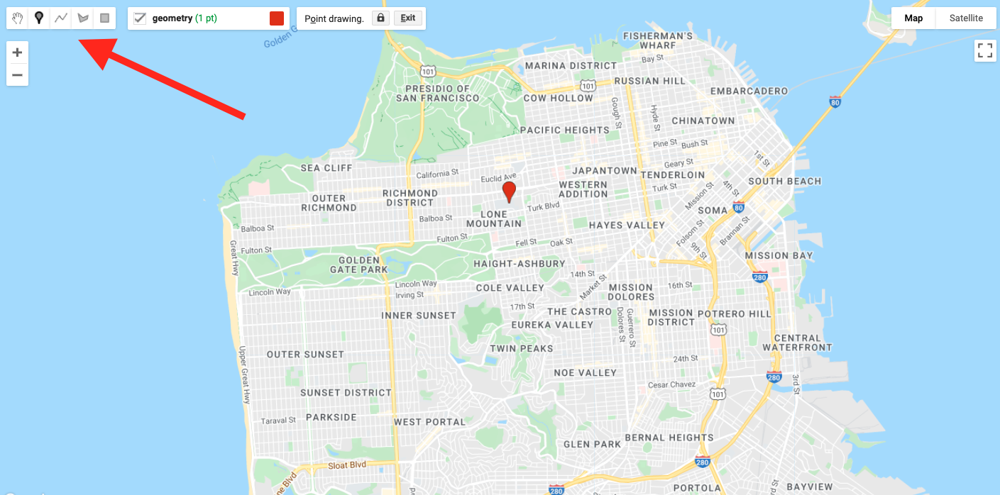
Fig. F5.0.1 Location of the USF campus in San Francisco, California. Your first point should be in this vicinity. The red arrow points to the geometry tools.
Use Google Maps to search for “Harney Science Center” or “Lo Schiavo Center for Science.” Hover your mouse over the Geometry Imports to find the +new layer menu item and add a new layer to delineate the boundary of a building on campus.
Next, create another new layer to represent the entire campus as a polygon.
After you create these layers, rename the geometry imports at the top of your script. Name the layers usf_point, usf_building, and usf_campus. These names are used within the script shown in Fig. F5.0.2.

Fig. F5.0.2 Rename the default variable names for each layer in the Imports section of the code at the top of your script
Code Checkpoint F50a. The book’s repository contains a script that shows what your code should look like at this point.
7.2 Loading Existing Features and Feature Collections in Earth Engine
If you wish to have the exact same geometry imports in this chapter for the rest of this exercise, begin this section using the code at the Code Checkpoint above.
Next, you will load a city block dataset to determine the amount of vegetation on blocks near USF. The code below imports an existing feature dataset in Earth Engine. The Topologically Integrated Geographic Encoding and Referencing (TIGER) boundaries are census-designated boundaries that are a useful resource when comparing socioeconomic and diversity metrics with environmental datasets in the United States.
// Import the Census Tiger Boundaries from GEE.
var tiger = ee.FeatureCollection(‘TIGER/2010/Blocks’);
// Add the new feature collection to the map, but do not display.
Map.addLayer(tiger, { ‘color’: ‘black’}, ‘Tiger’, false);
You should now have the geometry for USF’s campus and a layer added to your map that is not visualized for census blocks across the United States. Next, we will use neighborhood data to spatially filter the TIGER feature collection for blocks near USF’s campus.
7.3 Importing Features into Earth Engine
There are many image collections loaded in Earth Engine, and they can cover a very large area that you might want to study. Borders can be quite intricate (for example, a detailed coastline), and fortunately there is no need for you to digitize the intricate boundary of a large geographic area. Instead, we will show how to find a spatial dataset online, download the data, and load this into Earth Engine as an asset for use.
7.3.1 Find a Spatial Dataset of San Francisco Neighborhoods
Use your internet searching skills to locate the “Analysis Neighborhoods” dataset covering San Francisco. This data might be located in a number of places, including DataSF, the City of San Francisco’s public-facing data repository.

Fig. F5.0.3 DataSF website neighborhood shapefile to download
After you find the Analysis Neighborhoods layer, click Export and select Shapefile (Fig. F5.0.3). Keep track of where you save the zipped file, as we will load this into Earth Engine. Shapefiles contain vector-based data—points, lines, polygons—and include a number of files, such as the location information, attribute information, and others.
Extract the folder to your computer. When you open the folder, you will see that there are actually many files. The extensions (.shp, .dbf, .shx, .prj) all provide a different piece of information to display vector-based data. The .shp file provides data on the geometry. The .dbf file provides data about the attributes. The .shx file is an index file. Lastly, the .prj file describes the map projection of the coordinate information for the shapefile. You will need to load all four files to create a new feature asset in Earth Engine.
7.3.2 Upload SF Neighborhoods File as an Asset
Navigate to the Assets tab (near Scripts). Select New > Table Upload > Shape files (Fig. F5.0.4).
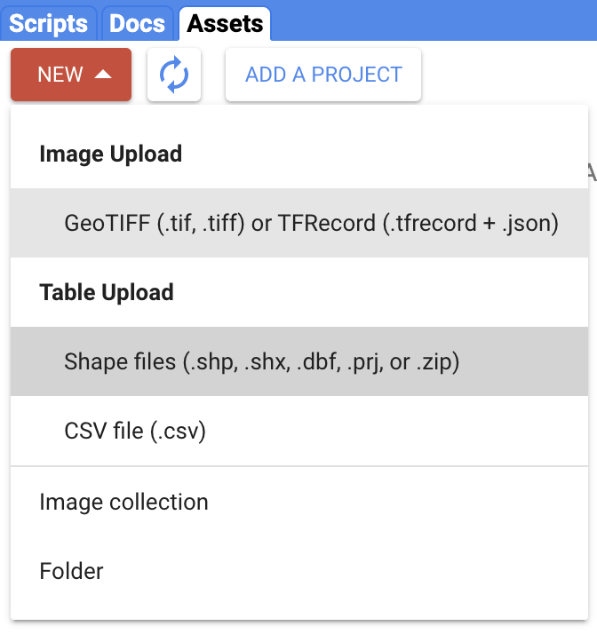
Fig. F5.0.4 Import an asset as a zipped folder
7.3.3 Select Files and Name Asset
Click the Select button and then use the file navigator to select the component files of the shapefile structure (i.e., .shp, .dbf, .shx, and .prj) (Fig. F5.0.5). Assign an Asset Name so you can recognize this asset.

Fig. F5.0.5 Select the four files extracted from the zipped folder. Make sure each file has the same name and that there are no spaces in the file names of the component files of the shapefile structure.
Uploading the asset may take a few minutes. The status of the upload is presented under the Tasks tab. After your asset has been successfully loaded, click on the asset in the Assets folder and find the collection ID. Copy this text and use it to import the file into your Earth Engine analysis.
Assign the asset to the table (collection) ID using the script below. Note that you will need to replace ‘path/to/your/asset/assetname’ with the actual path copied in the previous step.
// Assign the feature collection to the variable sfNeighborhoods.
var sfNeighborhoods = ee.FeatureCollection( ‘path/to/your/asset/assetname’);
// Print the size of the feature collection.
// (Answers the question how many features?)
print(sfNeighborhoods.size());
Map.addLayer(sfNeighborhoods, { ‘color’: ‘blue’}, ‘sfNeighborhoods’);
Note that if you have any trouble with loading the FeatureCollection using the technique above, you can follow directions in the Checkpoint script below to use an existing asset loaded for this exercise.
Code Checkpoint F50b. The book’s repository contains a script that shows what your code should look like at this point.
7.4 Filtering Feature Collections by Attributes
7.4.1 Filter by Geometry of Another Feature
First, let’s find the neighborhood associated with USF. Use the first point you created to find the neighborhood that intersects this point; filterBounds is the tool that does that, returning a filtered feature.
// Filter sfNeighborhoods by USF.
var usfNeighborhood = sfNeighborhoods.filterBounds(usf_point);
Now, filter the blocks layer by USF’s neighborhood and visualize it on the map.
// Filter the Census blocks by the boundary of the neighborhood layer.
var usfTiger = tiger.filterBounds(usfNeighborhood);
Map.addLayer(usfTiger, {}, ‘usf_Tiger’);
7.4.2 Filter by Feature (Attribute) Properties
In addition to filtering a FeatureCollection by the location of another feature, you can also filter it by its properties. First, let’s print the usfTiger variable to the Console and inspect the object.
print(usfTiger);
You can click on the feature collection name in the Console to uncover more information about the dataset. Click on the columns to learn about what attribute information is contained in this dataset. You will notice this feature collection contains information on both housing (‘housing10’) and population (‘pop10’).
Now you will filter for blocks with just the right amount of housing units. You don’t want it too dense, nor do you want too few neighbors.
Filter the blocks to have fewer than 250 housing units.
// Filter for census blocks by housing units.
var housing10_l250 = usfTiger
.filter(ee.Filter.lt(‘housing10’, 250));
Now filter the already-filtered blocks to have more than 50 housing units.
var housing10_g50_l250 = housing10_l250.filter(ee.Filter.gt( ‘housing10’, 50));
Now, let’s visualize what this looks like.
Map.addLayer(housing10_g50_l250, { ‘color’: ‘Magenta’}, ‘housing’);
We have combined spatial and attribute information to narrow the set to only those blocks that meet our criteria of having between 50 and 250 housing units.
7.4.3 Print Feature (Attribute) Properties to Console
We can print out attribute information about these features. The block of code below prints out the area of the resultant geometry in square meters.
var housing_area = housing10_g50_l250.geometry().area();
print(‘housing_area:’, housing_area);
The next block of code reduces attribute information and prints out the mean of the housing10 column.
var housing10_mean = usfTiger.reduceColumns({
reducer: ee.Reducer.mean(),
selectors: [‘housing10’]
});
print(‘housing10_mean’, housing10_mean);
Both of the above sections of code provide meaningful information about each feature, but they do not tell us which block is the most green. The next section will address that question.
Code Checkpoint F50c. The book’s repository contains a script that shows what your code should look like at this point.
7.5 Reducing Images Using Feature Geometry
Now that we have identified the blocks around USF’s campus that have the right housing density, let’s find which blocks are the greenest.
The Normalized Difference Vegetation Index (NDVI), presented in detail in Chap. F2.0, is often used to compare the greenness of pixels in different locations. Values on land range from 0 to 1, with values closer to 1 representing healthier and greener vegetation than values near 0.
7.5.1 Create an NDVI Image
The code below imports the Landsat 8 ImageCollection as landsat8. Then, the code filters for images in 2021. Lastly, the code sorts the images from 2021 to find the least cloudy day.
// Import the Landsat 8 TOA image collection.
var landsat8 = ee.ImageCollection(‘LANDSAT/LC08/C02/T1_TOA’);
// Get the least cloudy image in 2015.
var image = ee.Image(
landsat8
.filterBounds(usf_point)
.filterDate(‘2015-01-01’, ‘2015-12-31’)
.sort(‘CLOUD_COVER’)
.first());
The next section of code assigns the near-infrared band (B5) to variable nir and assigns the red band (B4) to red. Then the bands are combined together to compute NDVI as (nir − red)/(nir + red).
var nir = image.select(‘B5’);
var red = image.select(‘B4’);
var ndvi = nir.subtract(red).divide(nir.add(red)).rename(‘NDVI’);
7.5.2 Clip the NDVI Image to the Blocks Near USF
Next, you will clip the NDVI layer to only show NDVI over USF’s neighborhood.
The first section of code provides visualization settings.
var ndviParams = {
min: -1,
max: 1,
palette: [‘blue’, ‘white’, ‘green’]
};
The second block of code clips the image to our filtered housing layer.
var ndviUSFblocks = ndvi.clip(housing10_g50_l250);
Map.addLayer(ndviUSFblocks, ndviParams, ‘NDVI image’);
Map.centerObject(usf_point, 14);
The NDVI map for all of San Francisco is interesting, and shows variability across the region. Now, let’s compute mean NDVI values for each block of the city.
7.5.3 Compute NDVI Statistics by Block
The code below uses the clipped image ndviUSFblocks and computes the mean NDVI value within each boundary. The scale provides a spatial resolution for the mean values to be computed on.
// Reduce image by feature to compute a statistic e.g. mean, max, min etc.
var ndviPerBlock = ndviUSFblocks.reduceRegions({
collection: housing10_g50_l250,
reducer: ee.Reducer.mean(),
scale: 30,
});
Now we’ll use Earth Engine to find out which block is greenest.
7.5.4 Export Table of NDVI Data by Block from Earth Engine to Google Drive
Just as we loaded a feature into Earth Engine, we can export information from Earth Engine. Here, we will export the NDVI data, summarized by block, from Earth Engine to a Google Drive space so that we can interpret it in a program like Google Sheets or Excel.
// Get a table of data out of Google Earth Engine.
Export.table.toDrive({
collection: ndviPerBlock,
description: ‘NDVI_by_block_near_USF’
});
When you run this code, you will notice that you have the Tasks tab highlighted on the top right of the Earth Engine Code Editor (Fig. F5.0.6). You will be prompted to name the directory when exporting the data.

Fig. F5.0.6 Under the Tasks tab, select Run to initiate download
After you run the task, the file will be saved to your Google Drive. You have now brought a feature into Earth Engine and also exported data from Earth Engine.
Code Checkpoint F50d. The book’s repository contains a script that shows what your code should look like at this point.
7.6 Identifying the Block in the Neighborhood Surrounding USF with the Highest NDVI
You are already familiar with filtering datasets by their attributes. Now you will sort a table and select the first element of the table.
ndviPerBlock = ndviPerBlock.select([‘blockid10’, ‘mean’]);
print(‘ndviPerBlock’, ndviPerBlock);
var ndviPerBlockSorted = ndviPerBlock.sort(‘mean’, false);
var ndviPerBlockSortedFirst = ee.Feature(ndviPerBlock.sort(‘mean’, false) //Sort by NDVI mean in descending order. .first()); //Select the block with the highest NDVI.
print(‘ndviPerBlockSortedFirst’, ndviPerBlockSortedFirst);
If you expand the feature of ndviPerBlockSortedFirst in the Console, you will be able to identify the blockid10 value of the greenest block and the mean NDVI value for that area.
Another way to look at the data is by exporting the data to a table. Open the table using Google Sheets or Excel. You should see a column titled “mean.” Sort the mean column in descending order from highest NDVI to lowest NDVI, then use the blockid10 attribute to filter our feature collection one last time and display the greenest block near USF.
// Now filter by block and show on map!
var GreenHousing = usfTiger.filter(ee.Filter.eq(‘blockid10’,
‘###’)); //< Put your id here prepend a 0!
Map.addLayer(GreenHousing, { ‘color’: ‘yellow’}, ‘Green Housing!’);
Code Checkpoint F50e. The book’s repository contains a script that shows what your code should look like at this point.
Synthesis
Now it’s your turn to use both feature classes and to reduce data using a geographic boundary. Create a new script for an area of interest and accomplish the following assignments.
Assignment 1. Create a study area map zoomed to a certain feature class that you made.
Assignment 2. Filter one feature collection using feature properties.
Assignment 3. Filter one feature collection based on another feature’s location in space.
Assignment 4. Reduce one image to the geometry of a feature in some capacity; e.g., extract a mean value or a value at a point.
Conclusion
In this chapter, you learned how to import features into Earth Engine. In Sect. 1, you created new features using the geometry tools and loaded a feature from Earth Engine’s Data Catalog. In Sect. 2, you loaded a shapefile to an Earth Engine asset. In Sect. 3, you filtered feature collections based on their properties and locations. Finally, in Sects. 4 and 5, you used a feature collection to reduce an image, then exported the data from Earth Engine. Now you have all the tools you need to load, filter, and apply features to extract meaningful information from images using vector features in Earth Engine.
8 Raster/Vector Conversions
Overview
The purpose of this chapter is to review methods of converting between raster and vector data formats, and to understand the circumstances in which this is useful. By way of example, this chapter focuses on topographic elevation and forest cover change in Colombia, but note that these are generic methods that can be applied in a wide variety of situations.
Learning Outcomes
- Understanding raster and vector data in Earth Engine and their differing properties.
- Knowing how and why to convert from raster to vector.
- Knowing how and why to convert from vector to raster.
- Write a function and map it over a FeatureCollection.
Assumes you know how to:
- Import images and image collections, filter, and visualize (Part F1).
- Understand distinctions among Image, ImageCollection, Feature and FeatureCollection Earth Engine objects (Part F1, Part F2, Part F5).
- Perform basic image analysis: select bands, compute indices, create masks (Part F2).
- Perform image morphological operations (Chap. F3.2).
- Understand the filter, map, reduce paradigm (Chap. F4.0).
- Write a function and map it over an ImageCollection (Chap. F4.0).
- Use reduceRegions to summarize an image in irregular shapes (Chap. F5.0).
Introduction
Raster data consists of regularly spaced pixels arranged into rows and columns, familiar as the format of satellite images. Vector data contains geometry features (i.e., points, lines, and polygons) describing locations and areas. Each data format has its advantages, and both will be encountered as part of GIS operations.
Raster and vector data are commonly combined (e.g., extracting image information for a given location or clipping an image to an area of interest); however, there are also situations in which conversion between the two formats is useful. In making such conversions, it is important to consider the key advantages of each format. Rasters can store data efficiently where each pixel has a numerical value, while vector data can more effectively represent geometric features where homogenous areas have shared properties. Each format lends itself to distinctive analytical operations, and combining them can be powerful.
In this exercise, we’ll use topographic elevation and forest change images in Colombia as well as a protected area feature collection to practice the conversion between raster and vector formats, and to identify situations in which this is worthwhile.
8.1 Raster to Vector Conversion
8.1.1 Raster to Polygons
In this section we will convert an elevation image (raster) to a feature collection (vector). We will start by loading the Global Multi-Resolution Terrain Elevation Data 2010 and the Global Administrative Unit Layers 2015 dataset to focus on Colombia. The elevation image is a raster at 7.5 arc-second spatial resolution containing a continuous measure of elevation in meters in each pixel.
// Load raster (elevation) and vector (colombia) datasets.
var elevation = ee.Image(‘USGS/GMTED2010’).rename(‘elevation’);
var colombia = ee.FeatureCollection( ‘FAO/GAUL_SIMPLIFIED_500m/2015/level0’)
.filter(ee.Filter.equals(‘ADM0_NAME’, ‘Colombia’));
// Display elevation image.
Map.centerObject(colombia, 7);
Map.addLayer(elevation, {
min: 0,
max: 4000}, ‘Elevation’);
When converting an image to a feature collection, we will aggregate the categorical elevation values into a set of categories to create polygon shapes of connected pixels with similar elevations. For this exercise, we will create four zones of elevation by grouping the altitudes to 0-100 m = 0, 100–200 m = 1, 200–500 m = 2, and >500 m = 3.
// Initialize image with zeros and define elevation zones.
var zones = ee.Image(0)
.where(elevation.gt(100), 1)
.where(elevation.gt(200), 2)
.where(elevation.gt(500), 3);
// Mask pixels below sea level (<= 0 m) to retain only land areas.
// Name the band with values 0-3 as ‘zone’.
zones = zones.updateMask(elevation.gt(0)).rename(‘zone’);
Map.addLayer(zones, {
min: 0,
max: 3,
palette: [‘white’, ‘yellow’, ‘lime’, ‘green’],
opacity: 0.7}, ‘Elevation zones’);
We will convert this zonal elevation image in Colombia to polygon shapes, which is a vector format (termed a FeatureCollection in Earth Engine), using the ee.Image.reduceToVectors method. This will create polygons delineating connected pixels with the same value. In doing so, we will use the same projection and spatial resolution as the image. Please note that loading the vectorized image in the native resolution (231.92 m) takes time to execute. For faster visualization, we set a coarse scale of 1,000 m.
var projection = elevation.projection();
var scale = elevation.projection().nominalScale();
var elevationVector = zones.reduceToVectors({
geometry: colombia.geometry(),
crs: projection,
scale: 1000, // scale geometryType: ‘polygon’,
eightConnected: false,
labelProperty: ‘zone’,
bestEffort: true,
maxPixels: 1e13,
tileScale: 3 // In case of error.
});
print(elevationVector.limit(10));
var elevationDrawn = elevationVector.draw({
color: ‘black’,
strokeWidth: 1
});
Map.addLayer(elevationDrawn, {}, ‘Elevation zone polygon’);
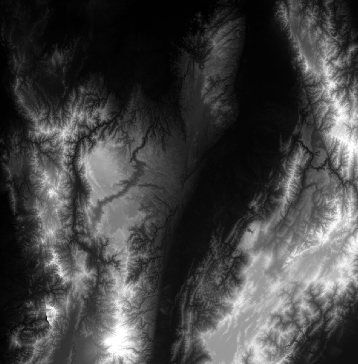


Fig. F5.1.1 Raster-based elevation (top left) and zones (top right), vectorized elevation zones overlaid on the raster (bottom-left) and vectorized elevation zones only (bottom-right)
You may have realized that polygons consist of complex lines, including some small polygons with just one pixel. That happens when there are no surrounding pixels of the same elevation zone. You may not need a vector map with such details—if, for instance, you want to produce a regional or global map. We can use a morphological reducer focalMode to simplify the shape by defining a neighborhood size around a pixel. In this example, we will set the kernel radius as four pixels. This operation makes the resulting polygons look much smoother, but less precise (Fig. F5.1.2).
var zonesSmooth = zones.focalMode(4, ‘square’);
zonesSmooth = zonesSmooth.reproject(projection.atScale(scale));
Map.addLayer(zonesSmooth, {
min: 1,
max: 3,
palette: [‘yellow’, ‘lime’, ‘green’],
opacity: 0.7}, ‘Elevation zones (smooth)’);
var elevationVectorSmooth = zonesSmooth.reduceToVectors({
geometry: colombia.geometry(),
crs: projection,
scale: scale,
geometryType: ‘polygon’,
eightConnected: false,
labelProperty: ‘zone’,
bestEffort: true,
maxPixels: 1e13,
tileScale: 3
});
var smoothDrawn = elevationVectorSmooth.draw({
color: ‘black’,
strokeWidth: 1
});
Map.addLayer(smoothDrawn, {}, ‘Elevation zone polygon (smooth)’);
We can see now that the polygons have more distinct shapes with many fewer small polygons in the new map (Fig. F5.1.2). It is important to note that when you use methods like focalMode (or other, similar methods such as connectedComponents and connectedPixelCount), you need to reproject according to the original image in order to display properly with zoom using the interactive Code Editor.
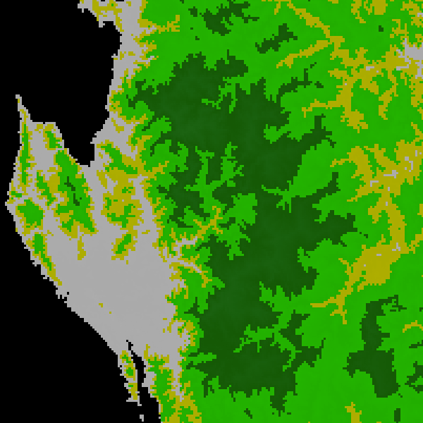
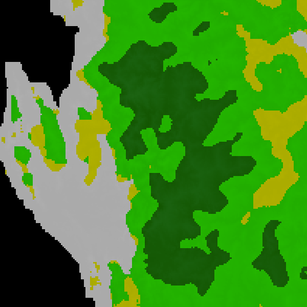
Fig. F5.1.2 Before (left) and after (right) applying focalMode
8.1.2 Raster to Points
Lastly, we will convert a small part of this elevation image into a point vector dataset. For this exercise, we will use the same example and build on the code from the previous subsection. This might be useful when you want to use geospatial data in a tabular format in combination with other conventional datasets such as economic indicators (Fig. F5.1.3).
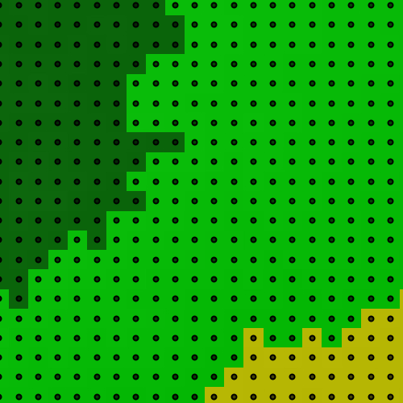
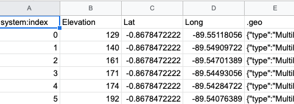
Fig. F5.1.3 Elevation point values with latitude and longitude
The easiest way to do this is to use sample while activating the geometries parameter. This will extract the points at the centroid of the elevation pixel.
var geometry = ee.Geometry.Polygon([
[-89.553, -0.929],
[-89.436, -0.929],
[-89.436, -0.866],
[-89.553, -0.866],
[-89.553, -0.929]
]);
// To zoom into the area, un-comment and run below
// Map.centerObject(geometry,12);
Map.addLayer(geometry, {}, ‘Areas to extract points’);
var elevationSamples = elevation.sample({
region: geometry,
projection: projection,
scale: scale,
geometries: true,
});
Map.addLayer(elevationSamples, {}, ‘Points extracted’);
// Add three properties to the output table:
// ‘Elevation’, ‘Longitude’, and ‘Latitude’.
elevationSamples = elevationSamples.map(function(feature) { var geom = feature.geometry().coordinates(); return ee.Feature(null, { ‘Elevation’: ee.Number(feature.get( ‘elevation’)), ‘Long’: ee.Number(geom.get(0)), ‘Lat’: ee.Number(geom.get(1))
});
});
// Export as CSV.
Export.table.toDrive({
collection: elevationSamples,
description: ‘extracted_points’,
fileFormat: ‘CSV’
});
We can also extract sample points per elevation zone. Below is an example of extracting 10 randomly selected points per elevation zone (Fig. F5.1.4). You can also set different values for each zone using classValues and classPoints parameters to modify the sampling intensity in each class. This may be useful, for instance, to generate point samples for a validation effort.
var elevationSamplesStratified = zones.stratifiedSample({
numPoints: 10,
classBand: ‘zone’,
region: geometry,
scale: scale,
projection: projection,
geometries: true
});
Map.addLayer(elevationSamplesStratified, {}, ‘Stratified samples’);

Fig. F5.1.4 Stratified sampling over different elevation zones
Code Checkpoint F51a. The book’s repository contains a script that shows what your code should look like at this point.
##3. A More Complex Example
In this section we’ll use two global datasets, one to represent raster formats and the other vectors:
- The Global Forest Change (GFC) dataset: a raster dataset describing global tree cover and change for 2001–present.
- The World Protected Areas Database: a vector database of global protected areas.
The objective will be to combine these two datasets to quantify rates of deforestation in protected areas in the “arc of deforestation” of the Colombian Amazon. The datasets can be loaded into Earth Engine with the following code:
// Read input data.
// Note: these datasets are periodically updated.
// Consider searching the Data Catalog for newer versions.
var gfc = ee.Image(‘UMD/hansen/global_forest_change_2020_v1_8’);
var wdpa = ee.FeatureCollection(‘WCMC/WDPA/current/polygons’);
// Print assets to show available layers and properties.
print(gfc);
print(wdpa.limit(10)); // Show first 10 records.
The GFC dataset (first presented in detail in Chap. F1.1) is a global set of rasters that quantify tree cover and change for the period beginning in 2001. We’ll use a single image from this dataset:
- ‘lossyear’: a categorical raster of forest loss (1–20, corresponding to deforestation for the period 2001–2020), and 0 for no change
The World Database on Protected Areas (WDPA) is a harmonized dataset of global terrestrial and marine protected area locations, along with details on the classification and management of each. In addition to protected area outlines, we’ll use two fields from this database:
- ‘NAME’’: the name of each protected area
- ‘WDPA_PID’: a unique numerical ID for each protected area
To begin with, we’ll focus on forest change dynamics in ‘La Paya’, a small protected area in the Colombian Amazon. We’ll first visualize these data using the paint command, which is discussed in more detail in Chap. F5.3:
// Display deforestation.
var deforestation = gfc.select(‘lossyear’);
Map.addLayer(deforestation, {
min: 1,
max: 20,
palette: [‘yellow’, ‘orange’, ‘red’]
}, ‘Deforestation raster’);
// Display WDPA data.
var protectedArea = wdpa.filter(ee.Filter.equals(‘NAME’, ‘La Paya’));
// Display protected area as an outline (see F5.3 for paint()).
var protectedAreaOutline = ee.Image().byte().paint({
featureCollection: protectedArea,
color: 1,
width: 3
});
Map.addLayer(protectedAreaOutline, {
palette: ‘white’}, ‘Protected area’);
// Set up map display.
Map.centerObject(protectedArea);
Map.setOptions(‘SATELLITE’);
This will display the boundary of the La Paya protected area and deforestation in the region (Fig. F5.1.5).

Fig. F5.1.5 View of the La Paya protected area in the Colombian Amazon (in white), and deforestation over the period 2001–2020 (in yellows and reds, with darker colors indicating more recent changes)
We can use Earth Engine to convert the deforestation raster to a set of polygons. The deforestation data are appropriate for this transformation as each deforestation event is labeled categorically by year, and change events are spatially contiguous. This is performed in Earth Engine using the ee.Image.reduceToVectors method, as described earlier in this section.
// Convert from a deforestation raster to vector.
var deforestationVector = deforestation.reduceToVectors({
scale: deforestation.projection().nominalScale(),
geometry: protectedArea.geometry(),
labelProperty: ‘lossyear’, // Label polygons with a change year. maxPixels: 1e13
});
// Count the number of individual change events
print(‘Number of change events:’, deforestationVector.size());
// Display deforestation polygons. Color outline by change year.
var deforestationVectorOutline = ee.Image().byte().paint({
featureCollection: deforestationVector,
color: ‘lossyear’,
width: 1
});
Map.addLayer(deforestationVectorOutline, {
palette: [‘yellow’, ‘orange’, ‘red’],
min: 1,
max: 20}, ‘Deforestation vector’);
Fig. F5.1.6 shows a comparison of the raster versus vector representations of deforestation within the protected area.
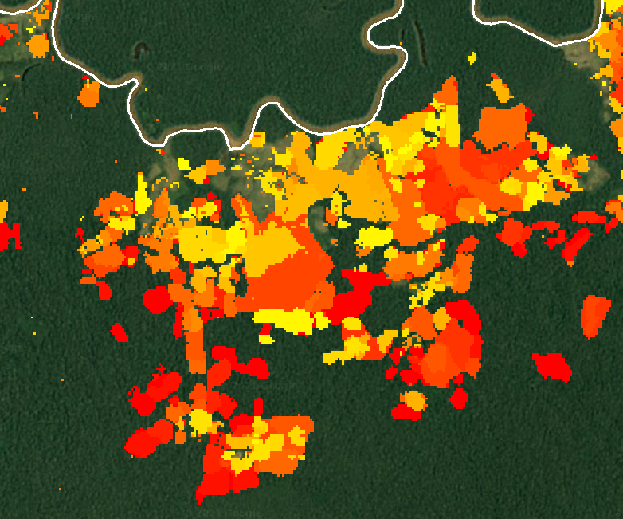

Fig. F5.1.6 Raster (left) versus vector (right) representations of deforestation data of the La Paya protected area
Having converted from raster to vector, a new set of operations becomes available for post-processing the deforestation data. We might, for instance, be interested in the number of individual change events each year (Fig. F5.1.7):
var chart = ui.Chart.feature
.histogram({
features: deforestationVector,
property: ‘lossyear’ })
.setOptions({
hAxis: {
title: ‘Year’ },
vAxis: {
title: ‘Number of deforestation events’ },
legend: {
position: ‘none’ }
});print(chart);
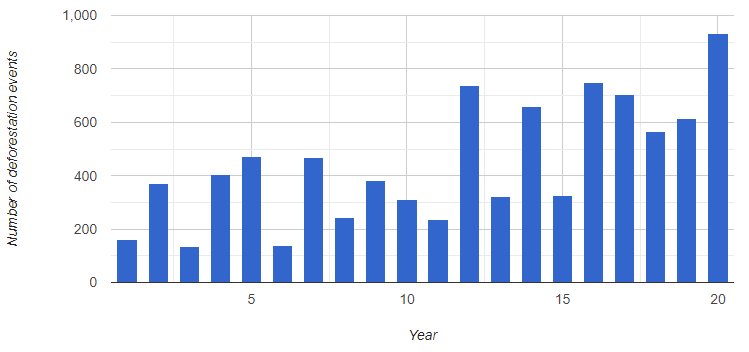
Fig. F5.1.7 Plot of the number of deforestation events in La Paya for the years 2001–2020
There might also be interest in generating point locations for individual change events (e.g., to aid a field campaign):
// Generate deforestation point locations.
var deforestationCentroids = deforestationVector.map(function(feat) { return feat.centroid();
});
Map.addLayer(deforestationCentroids, {
color: ‘darkblue’}, ‘Deforestation centroids’);
The vector format allows for easy filtering to only deforestation events of interest, such as only the largest deforestation events:
// Add a new property to the deforestation FeatureCollection
// describing the area of the change polygon.
deforestationVector = deforestationVector.map(function(feat) { return feat.set(‘area’, feat.geometry().area({
maxError: 10 }).divide(10000)); // Convert m^2 to hectare.
});
// Filter the deforestation FeatureCollection for only large-scale (>10 ha) changes
var deforestationLarge = deforestationVector.filter(ee.Filter.gt( ‘area’, 10));
// Display deforestation area outline by year.
var deforestationLargeOutline = ee.Image().byte().paint({
featureCollection: deforestationLarge,
color: ‘lossyear’,
width: 1
});
Map.addLayer(deforestationLargeOutline, {
palette: [‘yellow’, ‘orange’, ‘red’],
min: 1,
max: 20}, ‘Deforestation (>10 ha)’);
Code Checkpoint F51b. The book’s repository contains a script that shows what your code should look like at this point.
8.1.3 Raster Properties to Vector Fields
Sometimes we want to extract information from a raster to be included in an existing vector dataset. An example might be estimating a deforestation rate for a set of protected areas. Rather than perform this task on a case-by-case basis, we can attach information generated from an image as a property of a feature.
The following script shows how this can be used to quantify a deforestation rate for a set of protected areas in the Colombian Amazon.
// Load required datasets.
var gfc = ee.Image(‘UMD/hansen/global_forest_change_2020_v1_8’);
var wdpa = ee.FeatureCollection(‘WCMC/WDPA/current/polygons’);
// Display deforestation.
var deforestation = gfc.select(‘lossyear’);
Map.addLayer(deforestation, {
min: 1,
max: 20,
palette: [‘yellow’, ‘orange’, ‘red’]
}, ‘Deforestation raster’);
// Select protected areas in the Colombian Amazon.
var amazonianProtectedAreas = [ ‘Cordillera de los Picachos’, ‘La Paya’, ‘Nukak’, ‘Serrania de Chiribiquete’, ‘Sierra de la Macarena’, ‘Tinigua’
];
var wdpaSubset = wdpa.filter(ee.Filter.inList(‘NAME’,
amazonianProtectedAreas));
// Display protected areas as an outline.
var protectedAreasOutline = ee.Image().byte().paint({
featureCollection: wdpaSubset,
color: 1,
width: 1
});
Map.addLayer(protectedAreasOutline, {
palette: ‘white’}, ‘Amazonian protected areas’);
// Set up map display.
Map.centerObject(wdpaSubset);
Map.setOptions(‘SATELLITE’);
var scale = deforestation.projection().nominalScale();
// Use ‘reduceRegions’ to sum together pixel areas in each protected area.
wdpaSubset = deforestation.gte(1)
.multiply(ee.Image.pixelArea().divide(10000)).reduceRegions({
collection: wdpaSubset,
reducer: ee.Reducer.sum().setOutputs([ ‘deforestation_area’]),
scale: scale
});
print(wdpaSubset); // Note the new ‘deforestation_area’ property.
The output of this script is an estimate of deforested area in hectares for each reserve. However, as reserve sizes vary substantially by area, we can normalize by the total area of each reserve to quantify rates of change.
// Normalize by area.
wdpaSubset = wdpaSubset.map( function(feat) { return feat.set(‘deforestation_rate’, ee.Number(feat.get(‘deforestation_area’))
.divide(feat.area().divide(10000)) // m2 to ha .divide(20) // number of years .multiply(100)); // to percentage points });// Print to identify rates of change per protected area.
// Which has the fastest rate of loss?
print(wdpaSubset.reduceColumns({
reducer: ee.Reducer.toList().repeat(2),
selectors: [‘NAME’, ‘deforestation_rate’]
}));
Code Checkpoint F51c. The book’s repository contains a script that shows what your code should look like at this point.
8.2 Vector-to-Raster Conversion
In Sect. 1, we used the protected area feature collection as its original vector format. In this section, we will rasterize the protected area polygons to produce a mask and use this to assess rates of forest change.
8.2.1 Polygons to a Mask
The most common operation to convert from vector to raster is the production of binary image masks, describing whether a pixel intersects a line or falls within a polygon. To convert from vector to a raster mask, we can use the ee.FeatureCollection.reduceToImage method. Let’s continue with our example of the WDPA database and Global Forest Change data from the previous section:
// Load required datasets.
var gfc = ee.Image(‘UMD/hansen/global_forest_change_2020_v1_8’);
var wdpa = ee.FeatureCollection(‘WCMC/WDPA/current/polygons’);
// Get deforestation.
var deforestation = gfc.select(‘lossyear’);
// Generate a new property called ‘protected’ to apply to the output mask.
var wdpa = wdpa.map(function(feat) { return feat.set(‘protected’, 1);
});
// Rasterize using the new property.
// unmask() sets areas outside protected area polygons to 0.
var wdpaMask = wdpa.reduceToImage([‘protected’], ee.Reducer.first())
.unmask();
// Center on Colombia.
Map.setCenter(-75, 3, 6);
// Display on map.
Map.addLayer(wdpaMask, {
min: 0,
max: 1}, ‘Protected areas (mask)’);
We can use this mask to, for example, highlight only deforestation that occurs within a protected area using logical operations:
// Set the deforestation layer to 0 where outside a protected area.
var deforestationProtected = deforestation.where(wdpaMask.eq(0), 0);
// Update mask to hide where deforestation layer = 0
var deforestationProtected = deforestationProtected
.updateMask(deforestationProtected.gt(0));
// Display deforestation in protected areas
Map.addLayer(deforestationProtected, {
min: 1,
max: 20,
palette: [‘yellow’, ‘orange’, ‘red’]
}, ‘Deforestation protected’);
In the above example we generated a simple binary mask, but reduceToImage can also preserve a numerical property of the input polygons. For example, we might want to be able to determine which protected area each pixel represents. In this case, we can produce an image with the unique ID of each protected area:
// Produce an image with unique ID of protected areas.
var wdpaId = wdpa.reduceToImage([‘WDPAID’], ee.Reducer.first());
Map.addLayer(wdpaId, {
min: 1,
max: 100000}, ‘Protected area ID’);
This output can be useful when performing large-scale raster operations, such as efficiently calculating deforestation rates for multiple protected areas.
Code Checkpoint F51d. The book’s repository contains a script that shows what your code should look like at this point.
8.2.2 A More Complex Example
The reduceToImage method is not the only way to convert a feature collection to an image. We will create a distance image layer from the boundary of the protected area using distance. For this example, we return to the La Paya protected area explored in Sect. 1.
// Load required datasets.
var gfc = ee.Image(‘UMD/hansen/global_forest_change_2020_v1_8’);
var wdpa = ee.FeatureCollection(‘WCMC/WDPA/current/polygons’);
// Select a single protected area.
var protectedArea = wdpa.filter(ee.Filter.equals(‘NAME’, ‘La Paya’));
// Maximum distance in meters is set in the brackets.
var distance = protectedArea.distance(1000000);
Map.addLayer(distance, {
min: 0,
max: 20000,
palette: [‘white’, ‘grey’, ‘black’],
opacity: 0.6}, ‘Distance’);
Map.centerObject(protectedArea);
We can also show the distance inside and outside of the boundary by using the rasterized protected area (Fig. F5.1.8).
// Produce a raster of inside/outside the protected area.
var protectedAreaRaster = protectedArea.map(function(feat) { return feat.set(‘protected’, 1);
}).reduceToImage([‘protected’], ee.Reducer.first());
Map.addLayer(distance.updateMask(protectedAreaRaster), {
min: 0,
max: 20000}, ‘Distance inside protected area’);
Map.addLayer(distance.updateMask(protectedAreaRaster.unmask()
.not()), {
min: 0,
max: 20000}, ‘Distance outside protected area’);

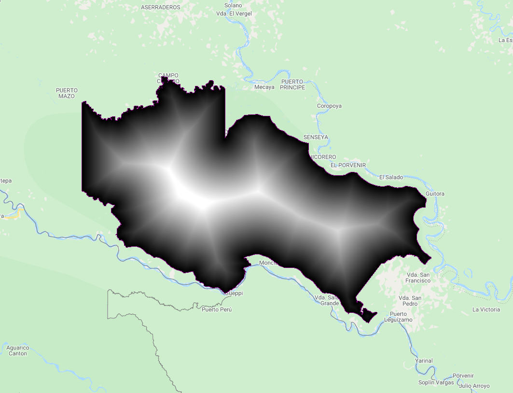

Fig. F5.1.8 Distance from the La Paya boundary (left), distance within the La Paya (middle), and distance outside the La Paya (right)
Sometimes it makes sense to work with objects in raster imagery. This is an unusual case of vector-like operations conducted with raster data. There is a good reason for this where the vector equivalent would be computationally burdensome.
An example of this is estimating deforestation rates by distance to the edge of the protected area, as it is common that rates of change will be higher at the boundary of a protected area. We will create a distance raster with three zones from the La Paya boundary (>1 km, >2 km, >3 km, and >4 km) and to estimate the deforestation by distance from the boundary (Fig. F5.1.9).
var distanceZones = ee.Image(0)
.where(distance.gt(0), 1)
.where(distance.gt(1000), 2)
.where(distance.gt(3000), 3)
.updateMask(distance.lte(5000));
Map.addLayer(distanceZones, {}, ‘Distance zones’);
var deforestation = gfc.select(‘loss’);
var deforestation1km = deforestation.updateMask(distanceZones.eq(1));
var deforestation3km = deforestation.updateMask(distanceZones.lte(2));
var deforestation5km = deforestation.updateMask(distanceZones.lte(3));
Map.addLayer(deforestation1km, {
min: 0,
max: 1}, ‘Deforestation within a 1km buffer’);
Map.addLayer(deforestation3km, {
min: 0,
max: 1,
opacity: 0.5}, ‘Deforestation within a 3km buffer’);
Map.addLayer(deforestation5km, {
min: 0,
max: 1,
opacity: 0.5}, ‘Deforestation within a 5km buffer’);
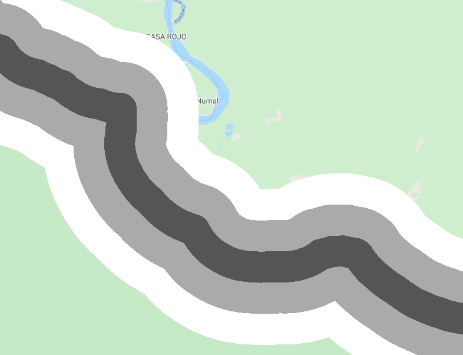


Fig. F5.1.9 Distance zones (top left) and deforestation by zone (<1 km, <3 km, and <5 km)
Lastly, we can estimate the deforestation area within 1 km of the protected area but only outside of the boundary.
var deforestation1kmOutside = deforestation1km
.updateMask(protectedAreaRaster.unmask().not());
// Get the value of each pixel in square meters
// and divide by 10000 to convert to hectares.
var deforestation1kmOutsideArea = deforestation1kmOutside.eq(1)
.multiply(ee.Image.pixelArea()).divide(10000);
// We need to set a larger geometry than the protected area
// for the geometry parameter in reduceRegion().
var deforestationEstimate = deforestation1kmOutsideArea
.reduceRegion({
reducer: ee.Reducer.sum(),
geometry: protectedArea.geometry().buffer(1000),
scale: deforestation.projection().nominalScale()
});
print(‘Deforestation within a 1km buffer outside the protected area (ha)’,
deforestationEstimate);
Code Checkpoint F51e. The book’s repository contains a script that shows what your code should look like at this point.
Synthesis
Question 1. In this lab, we quantified rates of deforestation in La Paya. There is another protected area in the Colombian Amazon named Tinigua. By modifying the existing scripts, determine how the dynamics of forest change in Tinigua compare to those in La Paya with respect to:
- the number of deforestation events
- the year with the greatest number of change events
- the mean average area of change events
- the total area of loss
Question 2. In Sect. 1.4, we only considered losses of tree cover, but many protected areas will also have increases in tree cover from regrowth (which is typical of shifting agriculture). Calculate growth in hectares using the Global Forest Change dataset’s gain layer for the six protected areas in Sect. 1.4 by extracting the raster properties and adding them to vector fields. Which has the greatest area of regrowth? Is this likely to be sufficient to balance out the rates of forest loss? Note: The gain layer shows locations where tree cover has increased for the period 2001–2012 (0 = no gain, 1 = tree cover increase), so for comparability use deforestation between the same time period of 2001–2012.
Question 3. In Sect. 2.2, we considered rates of deforestation in a buffer zone around La Paya. Estimate the deforestation rates inside of La Paya using buffer zones. Is forest loss more common close to the boundary of the reserve?
Question 4. Sometimes it’s advantageous to perform processing using raster operations, particularly at large scales. It is possible to perform many of the tasks in Sect. 1.3 and 1.4 by first converting the protected area vector to raster, and then using only raster operations. As an example, can you display only deforestation events >10 ha in La Paya using only raster data? (Hint: Consider using ee.Image.connectedPixelCount. You may also want to also look at Sect. 2.1).
Conclusion
In this chapter, you learned how to convert raster to vector and vice versa. More importantly, you now have a better understanding of why and when such conversions are useful. Our examples should give you practical applications and ideas for using these techniques.
9 Zonal Statistics
::: {.callout-tip} # Chapter Information
Overview
The purpose of this chapter is to extract values from rasters for intersecting points or polygons. We will lay out the process and a function to calculate zonal statistics, which includes optional parameters to modify the function, and then apply the process to three examples using different raster datasets and combinations of parameters.
Learning Outcomes
- Buffering points as square or circular regions.
- Writing and applying functions with optional parameters.
- Learning what zonal statistics are and how to use reducers.
- Exporting computation results to a table.
- Copying properties from one image to another.
Assumes you know how to:
- Recognize similarities and differences among Landsat 5, 7, and 8 spectral bands (Part F1, Part F2, Part F3).
- Understand distinctions among Image, ImageCollection, Feature and FeatureCollection Earth Engine objects (Part F1, Part F2, Part F5).
- Use drawing tools to create points, lines, and polygons (Chap. F2.1).
- Write a function and map it over an ImageCollection (Chap. F4.0).
- Mask cloud, cloud shadow, snow/ice, and other undesired pixels (Chap. F4.3).
- Export calculated data to tables with Tasks (Chap. F5.0).
- Understand the differences between raster and vector data (Chap. F5.0, Chap. F5.1).
- Write a function and map it over a FeatureCollection (Chap. F5.1).
9.1 Introduction to Theory
Anyone working with field data collected at plots will likely need to summarize raster-based data associated with those plots. For instance, they need to know the Normalized Difference Vegetation Index (NDVI), precipitation, or elevation for each plot (or surrounding region). Calculating statistics from a raster within given regions is called zonal statistics. Zonal statistics were calculated in Chaps. F5.0 and F5.1 using ee.Image.ReduceRegions. Here, we present a more general approach to calculating zonal statistics with a custom function that works for both ee.Image and ee.ImageCollection objects. In addition to its flexibility, the reduction method used here is less prone to “Computed value is too large” errors that can occur when using ReduceRegions with very large or complex ee.FeatureCollection object inputs.
The zonal statistics function in this chapter works for an Image or an ImageCollection. Running the function over an ImageCollection will produce a table with values from each image in the collection per point. Image collections can be processed before extraction as needed—for example, by masking clouds from satellite imagery or by constraining the dates needed for a particular research question. In this tutorial, the data extracted from rasters are exported to a table for analysis, where each row of the table corresponds to a unique point-image combination.
In fieldwork, researchers often work with plots, which are commonly recorded as polygon files or as a center point with a set radius. It is rare that plots will be set directly in the center of pixels from your desired raster dataset, and many field GPS units have positioning errors. Because of these issues, it may be important to use a statistic of adjacent pixels (as described in Chap. F3.2) to estimate the central value in what’s often called a neighborhood mean or focal mean (Cansler and McKenzie 2012, Miller and Thode 2007).
To choose the size of your neighborhood, you will need to consider your research questions, the spatial resolution of the dataset, the size of your field plot, and the error from your GPS. For example, the raster value extracted for randomly placed 20 m diameter plots would likely merit use of a neighborhood mean when using Sentinel-2 or Landsat 8—at 10 m and 30 m spatial resolution, respectively—while using a thermal band from MODIS (Moderate Resolution Imaging Spectroradiometer) at 1000 m may not. While much of this tutorial is written with plot points and buffers in mind, a polygon asset with predefined regions will serve the same purpose.
9.2 Functions
Two functions are provided; copy and paste them into your script:
- A function to generate circular or square regions from buffered points
- A function to extract image pixel neighborhood statistics for a given region
9.2.1 Function: bufferPoints(radius, bounds)
Our first function, bufferPoints, returns a function for adding a buffer to points and optionally transforming to rectangular bounds (see Table F5.2.1).
Table F5.2.1 Parameters for bufferPoints
Parameter
Type
Description
radius
Number
buffer radius (m).
[bounds=false]
Boolean
An optional flag indicating whether to transform buffered point (i.e., a circle) to square bounds.
function bufferPoints(radius, bounds) { return function(pt) {
pt = ee.Feature(pt); return bounds ? pt.buffer(radius).bounds() : pt.buffer(
radius);
};
}
9.2.2 Function: zonalStats(fc, params)
The second function, zonalStats, reduces images in an ImageCollection by regions defined in a FeatureCollection. Note that reductions can return null statistics that you might want to filter out of the resulting feature collection. Null statistics occur when there are no valid pixels intersecting the region being reduced. This situation can be caused by points that are outside of an image or in regions that are masked for quality or clouds.
This function is written to include many optional parameters (see Table F5.2.2). Look at the function carefully and note how it is written to include defaults that make it easy to apply the basic function while allowing customization.
Table F5.2.2 Parameters for zonalStats
Parameter
Type
Description
ic
ee.ImageCollection
Image collection from which to extract values.
fc
ee.FeatureCollection
Feature collection that provides regions/zones by which to reduce image pixels.
[params]
Object
An optional Object that provides function arguments.
[params.reducer=ee.Reducer.mean()]
ee.Reducer
The reducer to apply. Optional.
[params.scale=null]
Number
A nominal scale in meters of the projection to work in. If null, the native nominal image scale is used. Optional.
[params.crs=null]
String
The projection to work in. If null, the native image Coordinate Reference System (CRS) is used. Optional.
[params.bands=null]
Array
A list of image band names for which to reduce values. If null, all bands will be reduced. Band names define column names in the resulting reduction table. Optional.
[params.bandsRename=null]
Array
A list of desired image band names. The length and order must correspond to the params.bands list. If null, band names will be unchanged. Band names define column names in the resulting reduction table. Optional.
[params.imgProps=null]
Array
A list of image properties to include in the table of region reduction results. If null, all image properties are included. Optional.
[params.imgPropsRename=null]
Array
A list of image property names to replace those provided by params.imgProps. The length and order must match the params.imgProps entries. Optional.
[params.datetimeName=’datetime]
String
The desired name of the datetime field. The datetime refers to the ‘system:time_start’ value of the ee.Image being reduced. Optional.
[params.datetimeFormat=’YYYY-MM-dd HH:mm:ss]
String
The desired datetime format. Use ISO 8601 data string standards. The datetime string is derived from the ‘system:time_start’ value of the ee.Image being reduced. Optional.
function zonalStats(ic, fc, params) { // Initialize internal params dictionary. var _params = {
reducer: ee.Reducer.mean(),
scale: null,
crs: null,
bands: null,
bandsRename: null,
imgProps: null,
imgPropsRename: null,
datetimeName: ‘datetime’,
datetimeFormat: ‘YYYY-MM-dd HH:mm:ss’ }; // Replace initialized params with provided params. if (params) { for (var param in params) {
_params[param] = params[param] || _params[param];
}
} // Set default parameters based on an image representative. var imgRep = ic.first(); var nonSystemImgProps = ee.Feature(null)
.copyProperties(imgRep).propertyNames(); if (!_params.bands) _params.bands = imgRep.bandNames(); if (!_params.bandsRename) _params.bandsRename = _params.bands; if (!_params.imgProps) _params.imgProps = nonSystemImgProps; if (!_params.imgPropsRename) _params.imgPropsRename = _params
.imgProps; // Map the reduceRegions function over the image collection. var results = ic.map(function(img) { // Select bands (optionally rename), set a datetime & timestamp property. img = ee.Image(img.select(_params.bands, _params
.bandsRename)) // Add datetime and timestamp features. .set(_params.datetimeName, img.date().format(
_params.datetimeFormat)) .set(‘timestamp’, img.get(‘system:time_start’)); // Define final image property dictionary to set in output features. var propsFrom = ee.List(_params.imgProps) .cat(ee.List([_params.datetimeName, ‘timestamp’])); var propsTo = ee.List(_params.imgPropsRename) .cat(ee.List([_params.datetimeName, ‘timestamp’])); var imgProps = img.toDictionary(propsFrom).rename(
propsFrom, propsTo); // Subset points that intersect the given image. var fcSub = fc.filterBounds(img.geometry()); // Reduce the image by regions. return img.reduceRegions({
collection: fcSub,
reducer: _params.reducer, scale: _params.scale, crs: _params.crs
}) // Add metadata to each feature. .map(function(f) { return f.set(imgProps);
}); // Converts the feature collection of feature collections to a single //feature collection. }).flatten(); return results;
}
9.3 Point Collection Creation
Below, we create a set of points that form the basis of the zonal statistics calculations. Note that a unique plot_id property is added to each point. A unique plot or point ID is important to include in your vector dataset for future filtering and joining.
var pts = ee.FeatureCollection([ ee.Feature(ee.Geometry.Point([-118.6010, 37.0777]), {
plot_id: 1 }), ee.Feature(ee.Geometry.Point([-118.5896, 37.0778]), {
plot_id: 2 }), ee.Feature(ee.Geometry.Point([-118.5842, 37.0805]), {
plot_id: 3 }), ee.Feature(ee.Geometry.Point([-118.5994, 37.0936]), {
plot_id: 4 }), ee.Feature(ee.Geometry.Point([-118.5861, 37.0567]), {
plot_id: 5 })
]);print(‘Points of interest’, pts);
Code Checkpoint F52a. The book’s repository contains a script that shows what your code should look like at this point.
9.4 Neighborhood Statistic Examples
The following examples demonstrate extracting raster neighborhood statistics for the following:
- A single raster with elevation and slope bands
- A multiband MODIS time series
- A multiband Landsat time series
In each example, the points created in the previous section will be buffered and then used as regions to extract zonal statistics for each image in the image collection.
9.4.1 Topographic Variables
This example demonstrates how to calculate zonal statistics for a single multiband image. This Digital Elevation Model (DEM) contains a single topographic band representing elevation.
###Buffer the Points
Nex, we will apply a 45 m radius buffer to the points defined previously by mapping the bufferPoints function over the feature collection. The radius is set to 45 m to correspond to the 90 m pixel resolution of the DEM. In this case, circles are used instead of squares (set the second argument as false, i.e., do not use bounds).
// Buffer the points.
var ptsTopo = pts.map(bufferPoints(45, false));
###Calculate Zonal Statistics
There are two important things to note about the zonalStats function that this example addresses:
- It accepts only an ee.ImageCollection, not an ee.Image; single images must be wrapped in an ImageCollection.
- It expects every image in the input image collection to have a timestamp property named ‘system:time_start’ with values representing milliseconds from 00:00:00 UTC on 1 January 1970. Most datasets should have this property, if not, one should be added.
// Import the MERIT global elevation dataset.
var elev = ee.Image(‘MERIT/DEM/v1_0_3’);
// Calculate slope from the DEM.
var slope = ee.Terrain.slope(elev);
// Concatenate elevation and slope as two bands of an image.
var topo = ee.Image.cat(elev, slope)
// Computed images do not have a ‘system:time_start’ property; add one based
// on when the data were collected. .set(‘system:time_start’, ee.Date(‘2000-01-01’).millis());
// Wrap the single image in an ImageCollection for use in the
// zonalStats function.
var topoCol = ee.ImageCollection([topo]);
Define arguments for the zonalStats function and then run it. Note that we are accepting defaults for the reducer, scale, Coordinate Reference System (CRS), and image properties to copy over to the resulting feature collection. Refer to the function definition above for defaults.
// Define parameters for the zonalStats function.
var params = {
bands: [0, 1],
bandsRename: [‘elevation’, ‘slope’]
};
// Extract zonal statistics per point per image.
var ptsTopoStats = zonalStats(topoCol, ptsTopo, params);print(‘Topo zonal stats table’, ptsTopoStats);
// Display the layers on the map.
Map.setCenter(-118.5957, 37.0775, 13);
Map.addLayer(topoCol.select(0), {
min: 2400,
max: 4200}, ‘Elevation’);
Map.addLayer(topoCol.select(1), {
min: 0,
max: 60}, ‘Slope’);
Map.addLayer(pts, {
color: ‘purple’}, ‘Points’);
Map.addLayer(ptsTopo, {
color: ‘yellow’}, ‘Points w/ buffer’);
The result is a copy of the buffered point feature collection with new properties added for the region reduction of each selected image band according to the given reducer. A part of the FeatureCollection is shown in Fig. F5.2.1. The data in that FeatureCollection corresponds to a table containing the information of Table F5.2.3. See Fig. F5.2.2 for a graphical representation of the points and the topographic data being summarized.

Fig. F5.2.1 A part of the FeatureCollection produced by calculating the zonal statistics

Fig. F5.2.2 Sample points and topographic slope. Elevation and slope values for regions intersecting each buffered point are reduced and attached as properties of the points.
Table F5.2.3 Example output from zonalStats organized as a table. Rows correspond to collection features and columns are feature properties. Note that elevation and slope values in this table are rounded to the nearest tenth for brevity.
plot_id
timestamp
datetime
elevation
slope
1
946684800000
2000-01-01 00:00:00
2648.1
29.7
2
946684800000
2000-01-01 00:00:00
2888.2
33.9
3
946684800000
2000-01-01 00:00:00
3267.8
35.8
4
946684800000
2000-01-01 00:00:00
2790.7
25.1
5
946684800000
2000-01-01 00:00:00
2559.4
29.4
9.4.2 MODIS Time Series
A time series of MODIS eight-day surface reflectance composites demonstrates how to calculate zonal statistics for a multiband ImageCollection that requires no preprocessing, such as cloud masking or computation. Note that there is no built-in function for performing region reductions on ImageCollection objects. The zonalStats function that we are using for reduction is mapping the reduceRegions function over an ImageCollection.
###Buffer the Points
In this example, suppose the point collection represents center points for field plots that are 100 m x 100 m, and apply a 50 m radius buffer to the points to match the size of the plot. Since we want zonal statistics for square plots, set the second argument of the bufferPoints function to true, so that the bounds of the buffered points are returned.
var ptsModis = pts.map(bufferPoints(50, true));
###Calculate Zonal Statistic
Import the MODIS 500 m global eight-day surface reflectance composite collection and filter the collection to include data for July, August, and September from 2015 through 2019.
var modisCol = ee.ImageCollection(‘MODIS/006/MOD09A1’)
.filterDate(‘2015-01-01’, ‘2020-01-01’)
.filter(ee.Filter.calendarRange(183, 245, ‘DAY_OF_YEAR’));
Reduce each image in the collection by each plot according to the following parameters. Note that this time the reducer is defined as the neighborhood median (ee.Reducer.median) instead of the default mean, and that scale, CRS, and properties for the datetime are explicitly defined.
// Define parameters for the zonalStats function.
var params = {
reducer: ee.Reducer.median(),
scale: 500,
crs: ‘EPSG:5070’,
bands: [‘sur_refl_b01’, ‘sur_refl_b02’, ‘sur_refl_b06’],
bandsRename: [‘modis_red’, ‘modis_nir’, ‘modis_swir’],
datetimeName: ‘date’,
datetimeFormat: ‘YYYY-MM-dd’
};
// Extract zonal statistics per point per image.
var ptsModisStats = zonalStats(modisCol, ptsModis, params);print(‘Limited MODIS zonal stats table’, ptsModisStats.limit(50));
The result is a feature collection with a feature for all combinations of plots and images. Interpreted as a table, the result has 200 rows (5 plots times 40 images) and as many columns as there are feature properties. Feature properties include those from the plot asset and the image, and any associated non-system image properties. Note that the printed results are limited to the first 50 features for brevity.
9.4.3 Landsat Time Series
This example combines Landsat surface reflectance imagery across three instruments: Thematic Mapper (TM) from Landsat 5, Enhanced Thematic Mapper Plus (ETM+) from Landsat 7, and Operational Land Imager (OLI) from Landsat 8.
The following section prepares these collections so that band names are consistent and cloud masks are applied. Reflectance among corresponding bands are roughly congruent for the three sensors when using the surface reflectance product; therefore the processing steps that follow do not address inter-sensor harmonization. Review the current literature on inter-sensor harmonization practices if you’d like to apply a correction.
###Prepare the Landsat Image Collection
First, define the function to mask cloud and shadow pixels (See Chap. F4.3 for more detail on cloud masking).
// Mask clouds from images and apply scaling factors.
function maskScale(img) { var qaMask = img.select(‘QA_PIXEL’).bitwiseAnd(parseInt(‘11111’, 2)).eq(0); var saturationMask = img.select(‘QA_RADSAT’).eq(0); // Apply the scaling factors to the appropriate bands. var getFactorImg = function(factorNames) { var factorList = img.toDictionary().select(factorNames)
.values(); return ee.Image.constant(factorList);
}; var scaleImg = getFactorImg([‘REFLECTANCE_MULT_BAND_.’]); var offsetImg = getFactorImg([‘REFLECTANCE_ADD_BAND_.’]); var scaled = img.select(‘SR_B.’).multiply(scaleImg).add(
offsetImg); // Replace the original bands with the scaled ones and apply the masks. return img.addBands(scaled, null, true)
.updateMask(qaMask)
.updateMask(saturationMask);
}
Next, define functions to select and rename the bands of interest for the Operational Land Imager (OLI) aboard Landsat 8, and for the TM/ETM+ imagers aboard earlier Landsats. This is important because the band numbers are different for OLI and TM/ETM+, and it will make future index calculations easier.
// Selects and renames bands of interest for Landsat OLI.
function renameOli(img) { return img.select(
[‘SR_B2’, ‘SR_B3’, ‘SR_B4’, ‘SR_B5’, ‘SR_B6’, ‘SR_B7’],
[‘Blue’, ‘Green’, ‘Red’, ‘NIR’, ‘SWIR1’, ‘SWIR2’]);
}
// Selects and renames bands of interest for TM/ETM+.
function renameEtm(img) { return img.select(
[‘SR_B1’, ‘SR_B2’, ‘SR_B3’, ‘SR_B4’, ‘SR_B5’, ‘SR_B7’],
[‘Blue’, ‘Green’, ‘Red’, ‘NIR’, ‘SWIR1’, ‘SWIR2’]);
}
Combine the cloud mask and band renaming functions into preparation functions for OLI and TM/ETM+. Add any other sensor-specific preprocessing steps that you’d like to the functions below.
// Prepares (cloud masks and renames) OLI images.
function prepOli(img) {
img = maskScale(img);
img = renameOli(img); return img;
}// Prepares (cloud masks and renames) TM/ETM+ images.
function prepEtm(img) {
img = maskScale(img);
img = renameEtm(img); return img;
}
Get the Landsat surface reflectance collections for OLI, ETM+, and TM sensors. Filter them by the bounds of the point feature collection and apply the relevant image preparation function.
var ptsLandsat = pts.map(bufferPoints(15, true));
var oliCol = ee.ImageCollection(‘LANDSAT/LC08/C02/T1_L2’)
.filterBounds(ptsLandsat)
.map(prepOli);
var etmCol = ee.ImageCollection(‘LANDSAT/LE07/C02/T1_L2’)
.filterBounds(ptsLandsat)
.map(prepEtm);
var tmCol = ee.ImageCollection(‘LANDSAT/LT05/C02/T1_L2’)
.filterBounds(ptsLandsat)
.map(prepEtm);
Merge the prepared sensor collections.
var landsatCol = oliCol.merge(etmCol).merge(tmCol);
###Calculate Zonal Statistics
Reduce each image in the collection by each plot according to the following parameters. Note that this example defines the imgProps and imgPropsRename parameters to copy over and rename just two selected image properties: Landsat image ID and the satellite that collected the data. It also uses the max reducer, which, as an unweighted reducer, will return the maximum value from pixels that have their centroid within the buffer (see Sect. 4.1 below for more details).
// Define parameters for the zonalStats function.
var params = {
reducer: ee.Reducer.max(),
scale: 30,
crs: ‘EPSG:5070’,
bands: [‘Blue’, ‘Green’, ‘Red’, ‘NIR’, ‘SWIR1’, ‘SWIR2’],
bandsRename: [‘ls_blue’, ‘ls_green’, ‘ls_red’, ‘ls_nir’, ‘ls_swir1’, ‘ls_swir2’ ],
imgProps: [‘SENSOR_ID’, ‘SPACECRAFT_ID’],
imgPropsRename: [‘img_id’, ‘satellite’],
datetimeName: ‘date’,
datetimeFormat: ‘YYYY-MM-dd’
};
// Extract zonal statistics per point per image.
var ptsLandsatStats = zonalStats(landsatCol, ptsLandsat, params) // Filter out observations where image pixels were all masked. .filter(ee.Filter.notNull(params.bandsRename));
print(‘Limited Landsat zonal stats table’, ptsLandsatStats.limit(50));
The result is a feature collection with a feature for all combinations of plots and images.
###Dealing with Large Collections
If your browser times out, try exporting the results (as described in Chap. F6.2). It’s likely that point feature collections that cover a large area or contain many points (point-image observations) will need to be exported as a batch task by either exporting the final feature collection as an asset or as a CSV/shapefile/GeoJSON to Google Drive or GCS.
Here is how you would export the above Landsat image-point feature collection to an asset and to Google Drive. Run the following code, activate the Code Editor Tasks tab, and then click the Run button. If you don’t specify your own existing folder in Drive, the folder “EEFA_outputs” will be created.
Export.table.toAsset({
collection: ptsLandsatStats,
description: ‘EEFA_export_Landsat_to_points’,
assetId: ‘EEFA_export_values_to_points’
});
Export.table.toDrive({
collection: ptsLandsatStats,
folder: ‘EEFA_outputs’, // this will create a new folder if it doesn’t exist description: ‘EEFA_export_values_to_points’,
fileFormat: ‘CSV’
});
Code Checkpoint F52b. The book’s repository contains a script that shows what your code should look like at this point.
9.5 Additional Notes
9.5.1 Weighted Versus Unweighted Region Reduction
A region used for calculation of zonal statistics often bisects multiple pixels. Should partial pixels be included in zonal statistics? Earth Engine lets you decide by allowing you to define a reducer as either weighted or unweighted (or you can provide per-pixel weight specification as an image band). A weighted reducer will include partial pixels in the zonal statistic calculation by weighting each pixel’s contribution according to the fraction of the area intersecting the region. An unweighted reducer, on the other hand, gives equal weight to all pixels whose cell center intersects the region; all other pixels are excluded from calculation of the statistic.
For aggregate reducers like ee.Reducer.mean and ee.Reducer.median, the default mode is weighted, while identifier reducers such as ee.Reducer.min and ee.Reducer.max are unweighted. You can adjust the behavior of weighted reducers by calling unweighted on them, as in ee.Reducer.mean.unweighted. You may also specify the weights by modifying the reducer with splitWeights; however, that is beyond the scope of this book.
9.5.2 Copy Properties to Computed Images
Derived, computed images do not retain the properties of their source image, so be sure to copy properties to computed images if you want them included in the region reduction table. For instance, consider the simple computation of unscaling Landsat SR data:
// Define a Landsat image.
var img = ee.ImageCollection(‘LANDSAT/LC08/C02/T1_L2’).first();
// Print its properties.
print(‘All image properties’, img.propertyNames());
// Subset the reflectance bands and unscale them.
var computedImg = img.select(‘SR_B.’).multiply(0.0000275).add(-0.2);
// Print the unscaled image’s properties.
print(‘Lost original image properties’, computedImg.propertyNames());
Notice how the computed image does not have the source image’s properties and only retains the bands information. To fix this, use the copyProperties function to add desired source properties to the derived image. It is best practice to copy only the properties you really need because some properties, such as those containing geometry objects, lists, or feature collections, can significantly increase the computational burden for large collections.
// Subset the reflectance bands and unscale them, keeping selected
// source properties.
var computedImg = img.select(‘SR_B.’).multiply(0.0000275).add(-0.2)
.copyProperties(img, [‘system:time_start’, ‘LANDSAT_PRODUCT_ID’]);
// Print the unscaled image’s properties.
print(‘Selected image properties retained’, computedImg
.propertyNames());
Now selected properties are included. Use this technique when returning computed, derived images in a mapped function, and in single-image operations.
9.5.3 Understanding Which Pixels are Included in Polygon Statistics
If you want to visualize what pixels are included in a polygon for a region reducer, you can adapt the following code to use your own region (by replacing geometry), dataset, desired scale, and CRS parameters. The important part to note is that the image data you are adding to the map is reprojected using the same scale and CRS as that used in your region reduction (see Fig. F5.2.3).
// Define polygon geometry.
var geometry = ee.Geometry.Polygon(
[
[
[-118.6019835717645, 37.079867782687884],
[-118.6019835717645, 37.07838698844939],
[-118.60036351751951, 37.07838698844939],
[-118.60036351751951, 37.079867782687884]
]
], null, false);
// Import the MERIT global elevation dataset.
var elev = ee.Image(‘MERIT/DEM/v1_0_3’);
// Define desired scale and crs for region reduction (for image display too).
var proj = {
scale: 90,
crs: ‘EPSG:5070’
};
The count reducer will return how many pixel centers are overlapped by the polygon region, which would be the number of pixels included in any unweighted reducer statistic. You can also visualize which pixels will be included in the reduction by using the toCollection reducer on a latitude/longitude image and adding resulting coordinates as feature geometry. Be sure to specify CRS and scale for both the region reducers and the reprojected layer added to the map (see bullet list below for more details).
// A count reducer will return how many pixel centers are overlapped by the
// polygon region.
var count = elev.select(0).reduceRegion({
reducer: ee.Reducer.count(),
geometry: geometry,
scale: proj.scale, crs: proj.crs
});
print(‘n pixels in the reduction’, count.get(‘dem’));
// Make a feature collection of pixel center points for those that are
// included in the reduction.
var pixels = ee.Image.pixelLonLat().reduceRegion({
reducer: ee.Reducer.toCollection([‘lon’, ‘lat’]),
geometry: geometry,
scale: proj.scale, crs: proj.crs
});
var pixelsFc = ee.FeatureCollection(pixels.get(‘features’)).map( function(f) { return f.setGeometry(ee.Geometry.Point([f.get(‘lon’), f
.get(‘lat’)
]));
});
// Display layers on the map.
Map.centerObject(geometry, 18);
Map.addLayer(
elev.reproject({
crs: proj.crs,
scale: proj.scale }),
{
min: 2500,
max: 3000,
palette: [‘blue’, ‘white’, ‘red’]
}, ‘Image’);
Map.addLayer(geometry, {
color: ‘white’}, ‘Geometry’);
Map.addLayer(pixelsFc, {
color: ‘purple’}, ‘Pixels in reduction’);

Fig. F5.2.3 Identifying pixels used in zonal statistics. By mapping the image and vector together, you can see which pixels are included in the unweighted statistic. For this example, three pixels would be included in the statistic because the polygon covers the center point of three pixels.
Code Checkpoint F52c. The book’s repository contains a script that shows what your code should look like at this point.
Finally, here are some notes on CRS and scale:
- Earth Engine runs reduceRegion using the projection of the image’s first band if the CRS is unspecified in the function. For imagery spanning multiple UTM zones, for example, this would lead to different origins. For some functions Earth Engine uses the default EPSG:4326. Therefore, when the opportunity is presented, such as by the reduceRegion function, it is important to specify the scale and CRS explicitly.
- The Map default CRS is EPSG:3857. When looking closely at pixels on the map, the data layer scale and CRS should also be set explicitly. Note that zooming out after setting a relatively small scale when reprojecting may result in memory and/or timeout errors because optimized pyramid layers for each zoom level will not be used.
- Specifying the CRS and scale in both the reduceRegion and addLayer functions allows the map visualization to align with the information printed in the Console.
- The Earth Engine default, WGS 84 lat long (EPSG:4326), is a generic CRS that works worldwide. The code above reprojects to EPSG:5070, North American Equal Albers, which is a CRS that preserves area for North American locations. Use the CRS that is best for your use case when adapting this to your own project, or maintain (and specify) the CRS of the image using, for example, crs: ‘img.projection().crs()’.
Synthesis
Question 1. Look at the MODIS example (Sect. 3.2), which uses the median reducer. Try modifying the reducer to be unweighted, either by specifying unweighted or using an identifier reducer like max. What happens, and why?
Question 2. Calculate zonal statistics for your own buffered points or polygons using a raster and reducer of interest. Be sure to consider the spatial scale of the raster and whether a weighted or unweighted reducer would be more appropriate for your interests.
If the point or polygon file is stored in a local shapefile or CSV file, first upload the data to your Earth Engine assets. All columns in your vector file, such as the plot name, will be retained through this process. Once you have an Earth Engine table asset ready, import the asset into your script by hovering over the name of the asset and clicking the arrow at the right side, or by calling it in your script with the following code.
var pts = ee.FeatureCollection(‘users/yourUsername/yourAsset’);
If you prefer to define points or polygons dynamically rather than loading an asset, you can add them to your script using the geometry tools. See Chap. F2.1 and F5.0 for more detail on adding and creating vector data.
Question 3. Try the code from Sect. 4.3 using the MODIS data and the first point from the pts variable. Among other modifications, you will need to create a buffer for the point, take a single MODIS image from the collection, and change visualization parameters.
- Think about the CRS in the code: The code reprojects to EPSG:5070, but MODIS is collected in the sinusoidal projection SR-ORG:6974. Try that CRS and describe how the image changes.
- Is the count reducer weighted or unweighted? Give an example of a circumstance to use a weighted reducer and an example for an unweighted reducer. Specify the buffer size you would use and the spatial resolution of your dataset.
Question 4. In the examples above, only a single ee.Reducer is passed to the zonalStats function, which means that only a single statistic is calculated (for example, zonal mean or median or maximum). What if you want multiple statistics—can you alter the code in Sect. 3.1 to (1) make the point buffer 500 instead of 45; (2) add the reducer parameter to the params dictionary; and (3) as its argument, supply a combined ee.Reducer that will calculate minimum, maximum, standard deviation, and mean statistics?
To achieve this you’ll need to chain several ee.Reducer.combine functions together. Note that if you accept all the individual ee.Reducer and ee.Reducer.combine function defaults, you’ll run into two problems related to reducer weighting differences, and whether or not the image inputs are shared among the combined set of reducers. How can you manipulate the individual ee.Reducer and ee.Reducer.combine functions to achieve the goal of calculating multiple zonal statistics in one call to the zonalStats function?
Conclusion
In this chapter, you used functions containing optional parameters to extract raster values for collocated points. You also learned how to buffer points, and apply weighted and unweighted reducers to get different types of zonal statistics. These functions were applied to three examples that differed by raster dataset, reducer, spatial resolution, and scale. Lastly, you covered related topics like weighting of reducers and buffer visualization. Now you’re ready to apply these ideas to your own work!
References
Cansler CA, McKenzie D (2012) How robust are burn severity indices when applied in a new region? Evaluation of alternate field-based and remote-sensing methods. Remote Sens 4:456–483. https://doi.org/10.3390/rs4020456
Miller JD, Thode AE (2007) Quantifying burn severity in a heterogeneous landscape with a relative version of the delta Normalized Burn Ratio (dNBR). Remote Sens Environ 109:66–80. https://doi.org/10.1016/j.rse.2006.12.006
10 Advanced Vector Operations
::: {.callout-tip} # Chapter Information
Overview
This chapter covers advanced techniques for visualizing and analyzing vector data in Earth Engine. There are many ways to visualize feature collections, and you will learn how to pick the appropriate method to create visualizations, such as a choropleth map. We will also cover geoprocessing techniques involving multiple vector layers, such as selecting features in one layer by their proximity to features in another layer and performing spatial joins.
Learning Outcomes
- Visualizing any vector dataset and creating a thematic map.
- Understanding joins in Earth Engine.
- Carrying out geoprocessing tasks with vector layers in Earth Engine.
Assumes you know how to:
- Filter a FeatureCollection to obtain a subset (Chap. F5.0, Chap. F5.1).
- Write a function and map it over a FeatureCollection (Chap. F5.1, Chap. F5.2).
10.1 Visualizing Feature Collections
There is a distinct difference between how rasters and vectors are visualized. While images are typically visualized based on pixel values, vector layers use feature properties (i.e., attributes) to create a visualization. Vector layers are rendered on the Map by assigning a value to the red, green, and blue channels for each pixel on the screen based on the geometry and attributes of the features. The functions used for vector data visualization in Earth Engine are listed below in increasing order of complexity.
- Map.addLayer: As with raster layers, you can add a FeatureCollection to the Map by specifying visualization parameters. This method supports only one visualization parameter: color. All features are rendered with the specified color.
- draw: This function supports the parameters pointRadius and strokeWidth in addition to color. It renders all features of the layer with the specified parameters.
- paint: This is a more powerful function that can render each feature with a different color and width based on the values in the specified property.
- style: This is the most versatile function. It can apply a different style to each feature, including color, pointSize, pointShape, width, fillColor, and lineType.
In the exercises below, we will learn how to use each of these functions and see how they can generate different types of maps.
10.1.1 Creating a Choropleth Map
We will use the TIGER: US Census Blocks layer, which stores census block boundaries and their characteristics within the United States, along with the San Francisco neighborhoods layer from Chap. F5.0 to create a population density map for the city of San Francisco.
We start by loading the census blocks and San Francisco neighborhoods layers. We use ee.Filter.bounds to filter the census blocks layer to the San Francisco boundary.
var blocks = ee.FeatureCollection(‘TIGER/2010/Blocks’);
var roads = ee.FeatureCollection(‘TIGER/2016/Roads’);
var sfNeighborhoods = ee.FeatureCollection( ‘projects/gee-book/assets/F5-0/SFneighborhoods’);
var geometry = sfNeighborhoods.geometry();
Map.centerObject(geometry);
// Filter blocks to the San Francisco boundary.
var sfBlocks = blocks.filter(ee.Filter.bounds(geometry));
The simplest way to visualize this layer is to use Map.addLayer (Fig. F5.3.1). We can specify a color value in the visParams parameter of the function. Each census block polygon will be rendered with stroke and fill of the specified color. The fill color is the same as the stroke color but has a 66% opacity.
// Visualize with a single color.
Map.addLayer(sfBlocks, {
color: ‘#de2d26’}, ‘Census Blocks (single color)’);

Fig. F5.3.1 San Francisco census blocks
The census blocks table has a property named ‘pop10’ containing the population totals as of the 2010 census. We can use this to create a choropleth map showing population density. We first need to compute the population density for each feature and add it as a property. To add a new property to each feature, we can map a function over the FeatureCollection and calculate the new property called ‘pop_density’. Earth Engine provides the area function, which can calculate the area of a feature in square meters. We convert it to square miles and calculate the population density per square mile.
// Add a pop_density column.
var sfBlocks = sfBlocks.map(function(f) { // Get the polygon area in square miles. var area_sqmi = f.area().divide(2.59e6); var population = f.get(‘pop10’); // Calculate population density. var density = ee.Number(population).divide(area_sqmi); return f.set({ ‘area_sqmi’: area_sqmi, ‘pop_density’: density
});
});
Now we can use the paint function to create an image from this FeatureCollection using the pop_density property. The paint function needs an empty image that needs to be cast to the appropriate data type. Let’s use the aggregate_stats function to calculate basic statistics for the given column of a FeatureCollection.
// Calculate the statistics of the newly computed column.
var stats = sfBlocks.aggregate_stats(‘pop_density’);
print(stats);
You will see that the population density values have a large range. We also have values that are greater than 100,000, so we need to make sure we select a data type that can store values of this size. We create an empty image and cast it to int32, which is able to hold large integer values.
D
The result is an image with pixel values representing the population density of the polygons. We can now use the standard image visualization method to add this layer to the Map (Fig. F5.3.2). Then, we need to determine minimum and maximum values for the visualization parameters.A reliable technique to produce a good visualization is to find minimum and maximum values that are within one standard deviation. From the statistics that we calculated earlier, we can estimate good minimum and maximum values to be 0 and 50000, respectively.
var palette = [‘fee5d9’, ‘fcae91’, ‘fb6a4a’, ‘de2d26’, ‘a50f15’];
var visParams = {
min: 0,
max: 50000,
palette: palette
};
Map.addLayer(sfBlocksPaint.clip(geometry), visParams, ‘Population Density’);
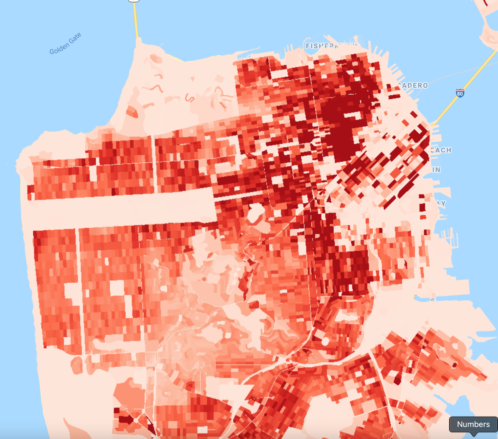
Fig. F5.3.2 San Francisco population density
10.1.2 Creating a Categorical Map
Continuing the exploration of styling methods, we will now learn about draw and style. These are the preferred methods of styling for points and line layers. Let’s see how we can visualize the TIGER: US Census Roads layer to create a categorical map.
We start by filtering the roads layer to the San Francisco boundary and using Map.addLayer to visualize it.
// Filter roads to San Francisco boundary.
var sfRoads = roads.filter(ee.Filter.bounds(geometry));
Map.addLayer(sfRoads, {
color: ‘blue’}, ‘Roads (default)’);
The default visualization renders each line using a width of 2 pixels. The draw function provides a way to specify a different line width. Let’s use it to render the layer with the same color as before but with a line width of 1 pixel (Fig. F5.3.3).
// Visualize with draw().
var sfRoadsDraw = sfRoads.draw({
color: ‘blue’,
strokeWidth: 1
});
Map.addLayer(sfRoadsDraw, {}, ‘Roads (Draw)’);
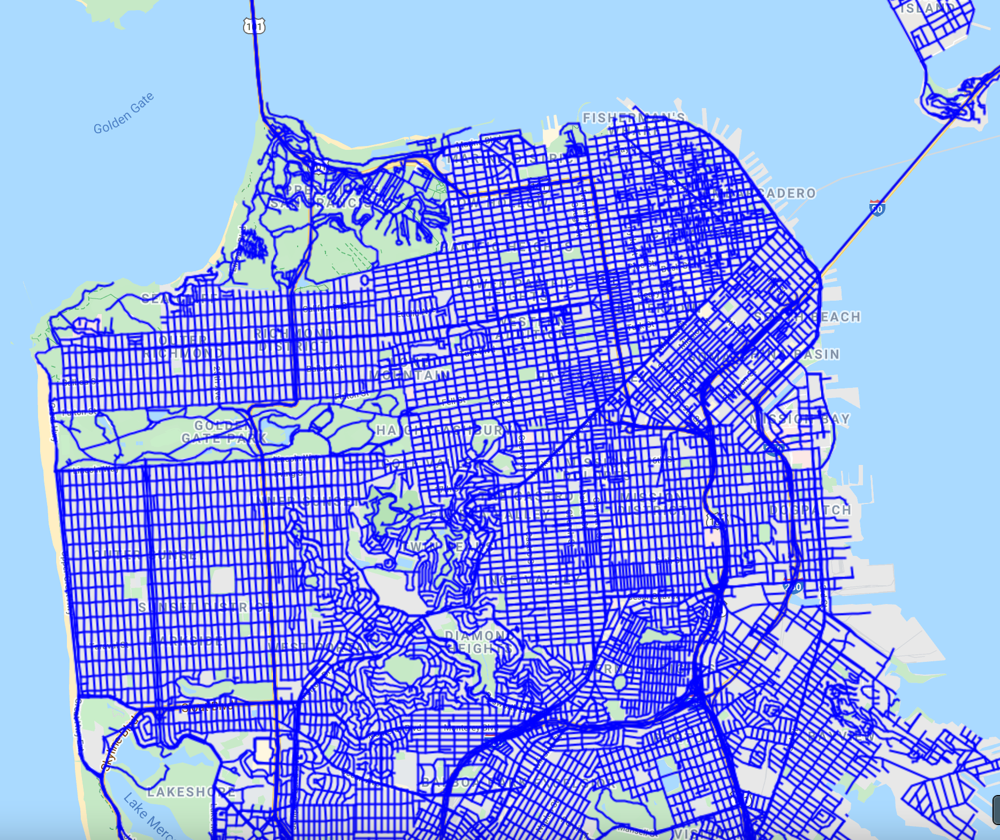

Fig. F5.3.3 San Francisco roads rendered with a line width of 2 pixels (left) and and a line width of 1 pixel (right)
The road layer has a column called “MTFCC” (standing for the MAF/TIGER Feature Class Code). This contains the road priority codes, representing the various types of roads, such as primary and secondary. We can use this information to render each road segment according to its priority. The draw function doesn’t allow us to specify different styles for each feature. Instead, we need to make use of the style function.
The column contains string values indicating different road types as indicated in Table F5.3.1. This full list is available at the MAF/TIGER Feature Class Code Definitions page on the US Census Bureau website.
Table F5.3.1 Census Bureau road priority codes
MTFCC
Feature Class
S1100
Primary Road
S1200
Secondary Road
S1400
Local Neighborhood Road, Rural Road, City Street
S1500
Vehicular Trail
S1630
Ramp
S1640
Service Drive
S1710
Walkway/Pedestrian Trail
S1720
Stairway
S1730
Alley
S1740
Private Road for service vehicles
S1750
Internal U.S. Census Bureau use
S1780
Parking Lot Road
S1820
Bike Path or Trail
S1830
Bridle Path
S2000
Road Median
Let’s say we want to create a map with rules based on the MTFCC values shown in Table F5.3.2.
Table F5.3.2 Styling Parameters for Road Priority Codes
MTFCC
Color
Line Width
S1100
Blue
3
S1200
Green
2
S1400
Orange
1
All Other Classes
Gray
1
Let’s define a dictionary containing the styling information.
var styles = ee.Dictionary({ ‘S1100’: { ‘color’: ‘blue’, ‘width’: 3 }, ‘S1200’: { ‘color’: ‘green’, ‘width’: 2 }, ‘S1400’: { ‘color’: ‘orange’, ‘width’: 1 }
});var defaultStyle = {
color: ‘gray’, ‘width’: 1
};
The style function needs a property in the FeatureCollection that contains a dictionary with the style parameters. This allows you to specify a different style for each feature. To create a new property, we map a function over the FeatureCollection and assign an appropriate style dictionary to a new property named ‘style’. Note the use of the get function, which allows us to fetch the value for a key in the dictionary. It also takes a default value in case the specified key does not exist. We make use of this to assign different styles to the three road classes specified in Table 5.3.2 and a default style to all others.
var sfRoads = sfRoads.map(function(f) { var classcode = f.get(‘mtfcc’); var style = styles.get(classcode, defaultStyle); return f.set(‘style’, style);
});
Our collection is now ready to be styled. We call the style function to specify the property that contains the dictionary of style parameters. The output of the style function is an RGB image rendered from the FeatureCollection (Fig. F5.3.4).
var sfRoadsStyle = sfRoads.style({
styleProperty: ‘style’
});
Map.addLayer(sfRoadsStyle.clip(geometry), {}, ‘Roads (Style)’);

Fig. F5.3.4 San Francisco roads rendered according to road priority
Code Checkpoint F53a. The book’s repository contains a script that shows what your code should look like at this point.
Save your script for your own future use, as outlined in Chap. F1.0. Then, refresh the Code Editor to begin with a new script for the next section.
10.2 Joins with Feature Collections
Earth Engine was designed as a platform for processing raster data, and that is where it shines. Over the years, it has acquired advanced vector data processing capabilities, and users are now able to carry out complex geoprocessing tasks within Earth Engine. You can leverage the distributed processing power of Earth Engine to process large vector layers in parallel.
This section shows how you can do spatial queries and spatial joins using multiple large feature collections. This requires the use of joins. As described for Image Collections in Chap. F4.9, a join allows you to match every item in a collection with items in another collection based on certain conditions. While you can achieve similar results using map and filter, joins perform better and give you more flexibility. We need to define the following items to perform a join on two collections.
- Filter: A filter defines the condition used to select the features from the two collections. There is a suite of filters in the ee.Filters module that work on two collections, such as ee.Filter.equals and ee.Filter.withinDistance.
- Join type: While the filter determines which features will be joined, the join type determines how they will be joined. There are many join types, including simple join, inner join, and save-all join.
Joins are one of the harder skills to master, but doing so will help you perform many complex analysis tasks within Earth Engine. We will go through practical examples that will help you understand these concepts and the workflow better.
10.2.1 Selecting by Location
In this section, we will learn how to select features from one layer that are within a specified distance from features in another layer. We will continue to work with the San Francisco census blocks and roads datasets from the previous section. We will implement a join to select all blocks in San Francisco that are within 1 km of an interstate highway.
We start by loading the census blocks and roads collections and filtering the roads layer to the San Francisco boundary.
var blocks = ee.FeatureCollection(‘TIGER/2010/Blocks’);
var roads = ee.FeatureCollection(‘TIGER/2016/Roads’);
var sfNeighborhoods = ee.FeatureCollection( ‘projects/gee-book/assets/F5-0/SFneighborhoods’);
var geometry = sfNeighborhoods.geometry();
Map.centerObject(geometry);
// Filter blocks and roads to San Francisco boundary.
var sfBlocks = blocks.filter(ee.Filter.bounds(geometry));
var sfRoads = roads.filter(ee.Filter.bounds(geometry));
As we want to select all blocks within 1 km of an interstate highway, we first filter the sfRoads collection to select all segments with the rttyp property value of I.
var interstateRoads = sfRoads.filter(ee.Filter.eq(‘rttyp’, ‘I’));
We use the draw function to visualize the sfBlocks and interstateRoads layers (Fig. F5.3.5).
var sfBlocksDrawn = sfBlocks.draw({
color: ‘gray’,
strokeWidth: 1 })
.clip(geometry);
Map.addLayer(sfBlocksDrawn, {}, ‘All Blocks’);
var interstateRoadsDrawn = interstateRoads.draw({
color: ‘blue’,
strokeWidth: 3 })
.clip(geometry);
Map.addLayer(interstateRoadsDrawn, {}, ‘Interstate Roads’);
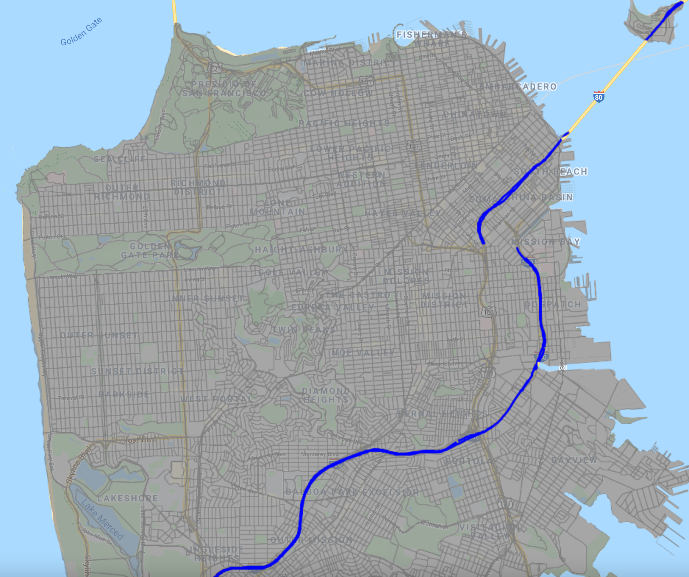
Fig. F5.3.5 San Francisco blocks and interstate highways
Let’s define a join that will select all the features from the sfBlocks layer that are within 1 km of any feature from the interstateRoads layer. We start by defining a filter using the ee.Filter.withinDistance filter. We want to compare the geometries of features in both layers, so we use a special property called ‘.geo’ to compare the collections. By default, the filter will work with exact distances between the geometries. If your analysis does not require a very precise tolerance of spatial uncertainty, specifying a small non-zero maxError distance value will help speed up the spatial operations. A larger tolerance also helps when testing or debugging code so you can get the result quickly instead of waiting longer for a more precise output.
var joinFilter = ee.Filter.withinDistance({
distance: 1000,
leftField: ‘.geo’,
rightField: ‘.geo’,
maxError: 10
});
We will use a simple join as we just want features from the first (primary) collection that match the features from the other (secondary) collection.
var closeBlocks = ee.Join.simple().apply({
primary: sfBlocks,
secondary: interstateRoads,
condition: joinFilter
});
We can visualize the results in a different color and verify that the join worked as expected (Fig. F5.3.6).
var closeBlocksDrawn = closeBlocks.draw({
color: ‘orange’,
strokeWidth: 1 })
.clip(geometry);
Map.addLayer(closeBlocksDrawn, {}, ‘Blocks within 1km’);

Fig. F5.3.6 Selected blocks within 1 km of an interstate highway
10.2.2 Spatial Joins
A spatial join allows you to query two collections based on the spatial relationship. We will now implement a spatial join to count points in polygons. We will work with a dataset of tree locations in San Francisco and polygons of neighborhoods to produce a CSV file with the total number of trees in each neighborhood.
The San Francisco Open Data Portal maintains a street tree map dataset that has a list of street trees with their latitude and longitude. We will also use the San Francisco neighborhood dataset from the same portal. We downloaded, processed, and uploaded these layers as Earth Engine assets for use in this exercise. We start by loading both layers and using the paint and style functions, covered in Sect. 1, to visualize them (Fig. F5.3.7).
var sfNeighborhoods = ee.FeatureCollection( ‘projects/gee-book/assets/F5-0/SFneighborhoods’);
var sfTrees = ee.FeatureCollection( ‘projects/gee-book/assets/F5-3/SFTrees’);
// Use paint() to visualize the polygons with only outline
var sfNeighborhoodsOutline = ee.Image().byte().paint({
featureCollection: sfNeighborhoods,
color: 1,
width: 3
});
Map.addLayer(sfNeighborhoodsOutline, {
palette: [‘blue’]
}, ‘SF Neighborhoods’);
// Use style() to visualize the points
var sfTreesStyled = sfTrees.style({
color: ‘green’,
pointSize: 2,
pointShape: ‘triangle’,
width: 2
});
Map.addLayer(sfTreesStyled, {}, ‘SF Trees’);

Fig. F5.3.7 San Francisco neighborhoods and trees
To find the tree points in each neighborhood polygon, we will use an ee.Filter.intersects filter.
var intersectFilter = ee.Filter.intersects({
leftField: ‘.geo’,
rightField: ‘.geo’,
maxError: 10
});
We need a join that can give us a list of all tree features that intersect each neighborhood polygon, so we need to use a saving join. A saving join will find all the features from the secondary collection that match the filter and store them in a property in the primary collection. Once you apply this join, you will get a version of the primary collection with an additional property that has the matching features from the secondary collection. Here we use the ee.Join.saveAll join, since we want to store all matching features. We specify the matchesKey property that will be added to each feature with the results.
var saveAllJoin = ee.Join.saveAll({
matchesKey: ‘trees’,
});
Let’s apply the join and print the first feature of the resulting collection to verify (Fig. F5.3.8).
var joined = saveAllJoin
.apply(sfNeighborhoods, sfTrees, intersectFilter);
print(joined.first());

Fig. F5.3.8 Result of the save-all join
You will see that each feature of the sfNeighborhoods collection now has an additional property called trees. This contains all the features from the sfTrees collection that were matched using the intersectFilter. We can now map a function over the results and post-process the collection. As our analysis requires the computation of the total number of trees in each neighborhood, we extract the matching features and use the size function to get the count (Fig. F5.3.9).
// Calculate total number of trees within each feature.
var sfNeighborhoods = joined.map(function(f) { var treesWithin = ee.List(f.get(‘trees’)); var totalTrees = ee.FeatureCollection(treesWithin).size(); return f.set(‘total_trees’, totalTrees);
});
print(sfNeighborhoods.first());

Fig. F5.3.9 Final FeatureCollection with the new property
The results now have a property called total_trees containing the count of intersecting trees in each neighborhood polygon.
The final step in the analysis is to export the results as a CSV file using the Export.table.toDrive function. Note that as described in detail in F6.2, you should output only the columns you need to the CSV file. Suppose we do not need all the properties to appear in the output; imagine that wedo not need the trees property, for example, in the output. In that case, we can create only those columns we want in the manner below, by specifying the other selectors parameters with the list of properties to export.
// Export the results as a CSV.
Export.table.toDrive({
collection: sfNeighborhoods,
description: ‘SF_Neighborhood_Tree_Count’,
folder: ‘earthengine’,
fileNamePrefix: ‘tree_count’,
fileFormat: ‘CSV’,
selectors: [‘nhood’, ‘total_trees’]
});
The final result is a CSV file with the neighborhood names and total numbers of trees counted using the join (Fig. F5.3.10).

Fig. F5.3.10 Exported CSV file with tree counts for San Francisco neighborhoods
Code Checkpoint F53b. The book’s repository contains a script that shows what your code should look like at this point.
Synthesis
Assignment 1. What join would you use if you wanted to know which neighborhood each tree belongs to? Modify the code above to do a join and post-process the result to add a neighborhood property to each tree point. Export the results as a shapefile.
Conclusion
This chapter covered visualization and analysis using vector data in Earth Engine. You should now understand different functions for FeatureCollection visualization and be able to create thematic maps with vector layers. You also learned techniques for doing spatial queries and spatial joins within Earth Engine. Earth Engine is capable of handling large feature collections and can be effectively used for many spatial analysis tasks.